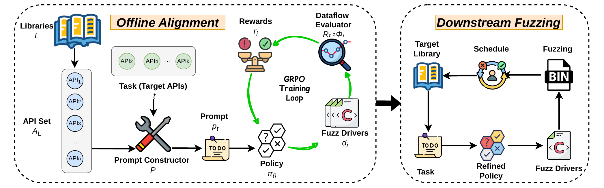
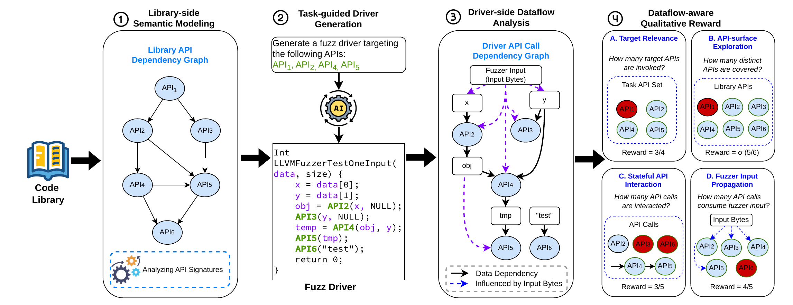

First-author manuscript · Submitted to ICSE 2027 · Under review
RLDriver: Reinforcement Learning for Dataflow-Aware Fuzz Driver Generation
RLDriver statically analyzes generated fuzz drivers along four dataflow dimensions and uses a customized Group Relative Policy Optimization procedure to fine-tune the generator.
Advisors: Prof. Ho Chen and Yunlong Lyu (PhD student), The University of Hong Kong.
Method
RLDriver extracts semantic information from library headers, constructs task-conditioned prompts, samples candidate drivers, and evaluates each candidate using static program analysis. The resulting bounded rewards are used for offline policy alignment. At inference time, reward computation and GRPO are disabled.
- Target API alignment
- Whether the driver invokes the APIs requested by the task.
- API-surface exploration
- How broadly the driver exercises related public APIs.
- Stateful API interaction
- Whether API calls form producer–consumer dependency chains.
- Fuzzer-input propagation
- How many API calls receive values derived from fuzzer input.

Evaluation
The evaluation covers 15 real-world C libraries with 1,772 public APIs and 601,690 lines of code. Ten libraries are used for GRPO alignment and five are held out for cross-library evaluation.
- RLDriver-32B achieves the highest aggregated reward on 13 of 15 libraries, including all five held-out libraries.
- On held-out libraries, its aggregated reward is 1.49, 43.3% above the unaligned Qwen2.5-Coder-32B baseline.
- When integrated with PromptFuzz, it achieves the highest code coverage on 9 of 15 libraries.
- Twenty-four-hour fuzzing campaigns detect 12 bugs across nine libraries.

Detected bugs
Twelve bugs were detected across nine libraries. Ten were confirmed or already fixed upstream; two remain under review. Each bug is listed on a separate row.